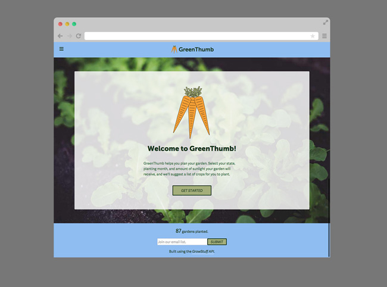

View the project live or view the code on Github.
About
This is the static version of GreenThumb, an app idea I pitched and worked on during the TIY Hackathon (which you can read more about here). I was responsible for the design of the app, and have iterated on the design of it since the Hackathon to make it more app-like and to use new skills I've learned.
Process & Technology Used
HTML, Sass, RWD, JS Plugins, Illustrator.
Challenges Faced & Problems Solved
A challenge I faced while working on this project was breaking out of my common design habits and patterns. I tackled this head on during the iterative process and made the design have an app-like feel, added more elements to the footer, and used a different JS plugin for the nav. A problem I solved was thinking about the flow of the app and how the users should be led through the process of planning and planting and writing about their gardens.
